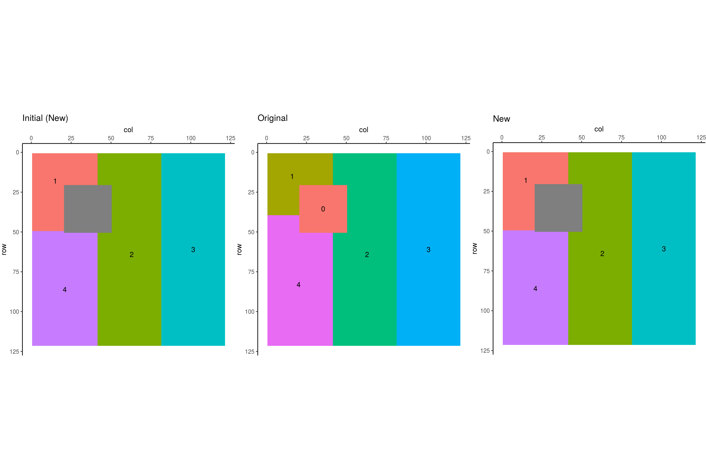
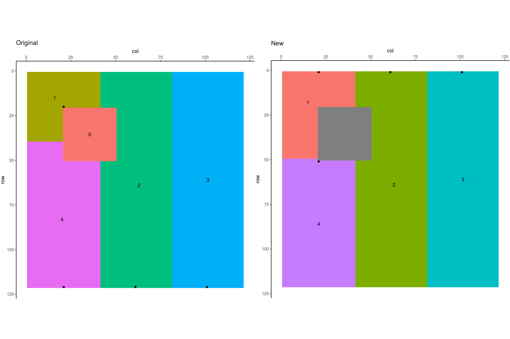
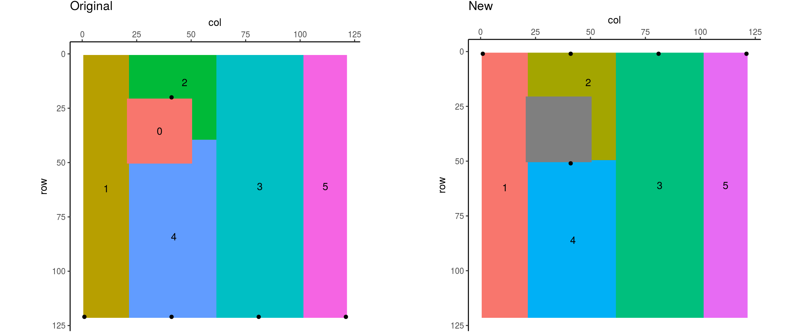

## Warning: Removed 1 rows containing missing values (geom_text).
## Warning: Removed 1 rows containing missing values (geom_text).
## Warning: Removed 1 rows containing missing values (geom_text).## Warning: Removed 900 rows containing missing values (geom_point).
Original Pond data
New Pond dataDifferences
c <- compare(pond, orig_pond)## Not all ShedNo the same## Not all ShedArea the same## Not all PitRec the same## Not all PourElev the same## Not all PitVol the same## Not all Varatio the same## Not all PitArea the same## Not all DrainsTo the same## Not all NextPit the same## Not all InRec the same## Not all InElev the same## Not all OutRec the same## Not all OutElev the samepond %>% select(ShedNo, PitRec, ShedArea, PitArea, PitVol, Varatio, InRec, OutRec)## # A tibble: 4 x 8
## ShedNo PitRec ShedArea PitArea PitVol Varatio InRec OutRec
## <dbl> <int> <int> <int> <dbl> <dbl> <int> <int>
## 1 1 21 1400 61 20 14.29 5828 5949
## 2 4 6071 2931 72 71 24.22 5949 5828
## 3 3 101 4840 4478 48400 10000.00 82 81
## 4 2 61 4570 4450 47050 10295.40 81 82orig_pond %>% select(ShedNo, PitRec, ShedArea, PitArea, PitVol, Varatio, InRec,
OutRec)## # A tibble: 4 x 8
## ShedNo PitRec ShedArea PitArea PitVol Varatio InRec OutRec
## <int> <int> <int> <int> <dbl> <dbl> <int> <int>
## 1 1 2320 1200 34 20 16.67 4618 4739
## 2 2 14581 4570 4570 47050 10295.40 81 203
## 3 3 14621 4840 4479 48160 9950.41 14602 14480
## 4 4 14541 3131 224 71 22.68 4739 4618Original Fill data
New Fill data
Differences
c <- compare(fill, orig_fill)## Not all ShedArea the same## Not all PitRec the same## Not all PitVol the same## Not all Varatio the same## Not all PitArea the same## Not all InRec the same## Not all OutRec the sameSame as above
Original Pit data
New Pit data
Differences
c <- compare(pit, orig_pit)## Not all ShedArea the same## Not all PitRec the same## Not all PitVol the same## Not all Varatio the same## Not all PitArea the same## Not all InRec the same## Not all OutRec the sameSame conclusions as above
Black dots indicate pits, or, as this is inverted, peaks
## Warning: Removed 1 rows containing missing values (geom_text).## Warning: Removed 900 rows containing missing values (geom_point).
c <- compare(ipit, orig_ipit)## Not all ShedArea the same## Not all PitRec the same## Not all PitVol the same## Not all Varatio the same## Not all PitArea the same## Not all DrainsTo the same## Not all InRec the same## Not all OutRec the sameipit %>% select(PitRec, ShedArea, PitVol, Varatio, InRec, OutRec)## # A tibble: 5 x 6
## PitRec ShedArea PitVol Varatio InRec OutRec
## <int> <int> <dbl> <dbl> <int> <int>
## 1 1 2511 25410 10119.47 21 22
## 2 41 1119 2000 1787.31 5859 5980
## 3 81 4840 48400 10000.00 101 102
## 4 6091 2851 7100 2490.35 5980 5859
## 5 121 2420 25410 10500.00 102 101orig_ipit %>% select(PitRec, ShedArea, PitVol, Varatio, InRec, OutRec)## # A tibble: 5 x 6
## PitRec ShedArea PitVol Varatio InRec OutRec
## <int> <int> <dbl> <dbl> <int> <int>
## 1 14521 2511 25410 10119.47 21 143
## 2 2340 1009 2000 1982.16 4649 4770
## 3 14601 4840 48400 10000.00 101 223
## 4 14561 2961 7100 2397.84 4770 4649
## 5 14641 2420 25290 10450.41 14622 14500